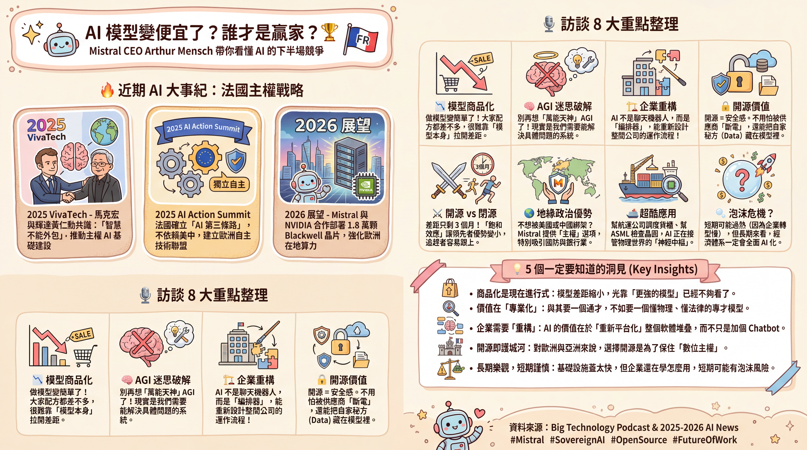

📊 分析概況
- 內容型態: interview
- 選定角色: 📰 記者 | 🎤 訪談者 | 🎯 領域專家
- 推薦對象: 業界研究者、決策者、知識工作者
會議紀錄：AI 業務與技術賽道的未來趨勢

訪談日期：2026 年 1 月 17 日
分析視角：記者 (J)、訪談者 (I)、領域專家 (SE)
核心議題：AI 模型商品化、價值轉移、垂直應用、開源 vs. 閉源、產業未來
1. 議題摘要與背景
本次會議記錄源自一場關於 AI 領域現況與未來發展的深度訪談。核心討論圍繞著「當頂尖 AI 模型表現趨於一致時，AI 業務將何去何從」，以及 Mistral AI 的 CEO Arthur Mench 對此的見解。
2. 專家團隊分析
2.1. 記者 (J) 的視角：新聞價值與公眾影響
- 新聞點:
- 模型同質化加速: 頂尖 AI 模型性能差距縮小，引發對產業權力平衡的討論。
- Mistral AI 的崛起: 一家年輕公司（2023 年 4 月成立）在短時間內達到 140 億美元估值，展現了驚人的市場潛力。
- 從 AGI 到應用: 科技巨頭（如 OpenAI）的敘事重心從追求通用人工智能 (AGI) 轉向企業應用開發，反映了市場現實。
- 開源 vs. 閉源的賽道爭奪: Mistral AI 選擇開源策略，與其他閉源模型提供商形成對比，這將是未來重要的競爭焦點。
- AI 在實體經濟的影響: 聚焦於工業、製造業、航太、國防等領域的實際應用，而非僅是聊天機器人。
- 故事性:
- Arthur Mench 的背景（學院派、DeepMind 經驗）與 Mistral 的快速成長，本身就是一個引人入勝的故事。
- 探索「當技術變得普遍，價值在哪裡？」這個根本性問題，能引起廣泛共鳴。
- 地緣政治（歐洲 vs. 美國 vs. 中國）在 AI 領域的影響，增加了故事的層次感。
- 潛在報導方向:
- 「AI 進入『後 AGI 時代』：企業應用才是新戰場？」
- 「Mistral AI：歐洲 AI 崛起的關鍵力量？」
- 「AI 泡沫或必然？巨頭豪賭與中小企業的生存之道。」
- 「當 AI 觸碰物理世界：從聊天機器人到改變工業的引擎。」
2.2. 訪談者 (I) 的視角：對話深度與人物洞察
- 核心洞察:
- 模型商品化的必然性: Arthur Mench 認為，AI 模型技術的本質決定了其將趨於商品化，關鍵在於知識的快速傳播和缺乏 IP 差異化。
- 價值轉移至下游應用: 由於模型本身商品化，真正的價值將更多體現在如何將 AI 應用於解決實際問題，並為企業帶來可衡量的效益。
- 從「總體解決方案」到「系統化思考」: AGI 作為單一萬能系統的概念被質疑，強調解決特定問題、進行客製化和系統整合的重要性。
- 開源策略的戰略性: Mistral AI 選擇開源，是基於對企業對「控制權」、「獨立性」和「避免供應商鎖定」需求的洞察。
- 實體經濟的「殺手級應用」: AI 在工業自動化、設計優化、物理問題解決（如製造業、材料科學）等領域展現巨大潛力，比聊天機器人更具變革性。
- 「技術差異化」是關鍵: Mistral 認為其核心競爭力在於提供可客製化、可部署在邊緣、以及開源的技術，這賦予了客戶控制權和獨立性。
- 關鍵對話點:
- 「您認為 AI 模型商品化對整個產業鏈帶來了哪些結構性變化？」
- 「對於企業而言，當模型不再是獨家優勢時，他們應該將目光投向何處？」
- 「AGI 的概念是否已經過時，或者說，它是否只是企業對未來的一種美好想像？」
- 「Mistral AI 的開源策略，是如何回應市場對『控制』和『自主』的需求？」
- 「在您看來，AI 在哪些實體經濟領域，將會產生比聊天機器人更深遠的影響？」
- 人物洞察: Arthur Mench 展現出對 AI 技術發展趨勢的深刻理解，以及對市場需求的精準把握。他強調理性、務實的解決方案，而非過度炒作的概念。他對開源的堅持，以及對企業客戶痛點的關注，是他事業成功的關鍵。
2.3. 領域專家 (SE) 的視角：專業知識與行業趨勢
- 領域知識與最佳實踐:
- 模型商品化的技術驅動:
- 算法與數據的普及: 核心訓練算法和大規模數據獲取對頂尖實驗室而言已變得相對容易獲得，縮小了差距。
- 算力獲取效率: 頂級算力（如 10^26 FLOPS）的獲取時間縮短，使得更多參與者能達到相似的預訓練規模。
- 效率提升: 訓練效率的提高進一步加速了模型性能的收斂。
- 價值轉移的實際體現:
- 從「模型」到「系統」: AI 的價值不在於單一模型，而在於將模型整合到複雜的業務流程中，形成「靜態定義」與「動態執行」的結合。
- 「上下文引擎」的重要性: 企業需要能理解、整合、並持續更新業務數據的「上下文引擎」，以驅動應用。
- 垂直化與客製化的必要性:
- 水平智能飽和: 廣泛的通用推理能力已接近飽和，難以產生持續的領先優勢。
- 垂直智能爆發: 未來的價值在於將模型深度客製化，使其在特定領域（如物理、生物、化學、金融）達到「超人類」水平。
- 小而美模型: 專用模型比單一龐大模型更具成本效益和部署靈活性。
- 開源 vs. 閉源的權衡:
- 開源優勢: 獨立性、可控性、避免供應商鎖定、社群協作創新、成本效益（長期）。
- 閉源優勢: 易於使用、技術門檻低（初期）、潛在的技術領先（短期）。
- Mistral 的戰略: 結合開源模型與服務，滿足企業對彈性、控制和客製化的需求。
- 模型商品化的技術驅動:
- 常見陷阱:
- 過度依賴 AGI 的幻覺: 認為一個萬能模型能解決所有問題，忽略了複雜系統的細微差別。
- 只關注模型性能，忽略部署與整合: 昂貴的模型若無法落地產生商業價值，則無意義。
- 對「商品化」後的利潤模式認識不清: 忽視了模型本身的低利潤率，而未能規劃下游服務和應用。
- 供應商鎖定風險: 過度依賴單一閉源供應商，可能導致未來戰略上的被動。
- 行業趨勢:
- AI 產業的「重塑」: 企業軟體堆疊的重新架構，AI 將成為核心組件。
- 數據的價值再定義: 專有數據經過 AI 處理，可轉化為獨特的商業智慧。
- 技術進步的加速器: AI 在解決物理限制、推動科學發現方面潛力巨大。
- 地理板塊的 AI 發展: 歐洲、中國、美國等地各自發展 AI 生態系統，追求自主性。
- 從知識密集型到物理世界: AI 在法律、金融等知識密集型領域的應用將先行，但物理世界的應用（製造、機器人）將更具變革性。
3. 綜合分析與決議
3.1. AI 業務模式演變
- 模型商品化與價值轉移:
- 普遍共識: AI 模型（尤其是基礎模型）的性能差距正在縮小，技術趨於商品化。
- 價值轉移方向: 價值將從模型本身轉移到：
- 下游應用與整合: 如何將 AI 應用於解決特定業務問題，並與現有系統整合。
- 客製化與垂直化: 針對特定行業或任務深度優化模型。
- 「上下文引擎」與「軟體堆疊重塑」: 構建理解和管理企業數據與流程的系統。
- 服務與諮詢: 幫助企業理解、部署和優化 AI 解決方案。
- Mistral AI 的定位: Mistral AI 成功地將自身定位為「開源模型領導者」和「企業解決方案提供者」，這使其能夠抓住價值轉移的機會。
3.2. 關鍵業務機會分類 (由 SE 提出，I 補充)
- 消費級應用 (Consumer Products):
- 潛力: 聊天機器人等，具備廣告商業模式。
- Mistral 的態度: 非其核心業務。
- 現有產品增強 (Enhancing Existing Products):
- 潛力: 如為 Excel 增加 AI 功能，提升現有軟體的使用體驗。
- SE 補充: 這是企業級應用的一個子集，通過 AI 提升現有工具的效率和智能化程度。
- 企業級應用 (Enterprise Side):
- 潛力: 最大的潛在價值所在，包括：
- 軟體堆疊重塑 (Replatforming Enterprise Software): 通過 AI 實現統一數據、智慧理解和動態介面，提高效率。
- 專有數據轉化為獨特智慧 (Proprietary Data to Unique Intelligence): 利用企業獨特的數據資產，訓練專用模型，產生競爭壁壘。
- 推動技術進步 (Unlocking Technological Progress): 解決物理學、化學、製造等領域的瓶頸，加速創新。
- SE 評級: 這是最重要且最具變革性的業務機會。
- 潛力: 最大的潛在價值所在，包括：
3.3. 開源 vs. 閉源策略 (由 SE 分析，I 補充)
- Mistral AI 的開源戰略:
- 核心原因: 提供「控制權」、「獨立性」、「避免供應商鎖定」，特別是對於對數據主權、國家安全敏感的企業和政府。
- 技術優勢: 能夠部署在邊緣，具備高彈性和可靠性。
- 社群與創新: 開源加速了知識傳播和技術迭代，Mistral 認為其模型能與頂級閉源模型競爭。
- 閉源模型的挑戰: 儘管能提供客製化，但最終仍受制於供應商的政策和技術閘門。
- SE 觀點: 開源是構建長期競爭力的重要策略，尤其是在 AI 成為基礎設施的未來。
3.4. 未來發展與挑戰
- 模型進步的重點:
- SE: 從廣泛的通用推理能力，轉向在特定垂直領域的深度優化和「超人類」表現。
- J: 質疑「垂直化」是否意味著模型不再能「做所有事」，SE 解釋這是為了效率和成本。
- 實體經濟應用 (Physical World Applications):
- SE: AI 在工業、製造業、物流、國防等領域的應用將比知識密集型領域（如法律）更具變革性，但實現起來更複雜，需要解決物理安全、硬體整合等問題。
- J: 聚焦 Cargo Dispatching (SEMA) 和 Vision Systems (ASML) 的例子，說明 AI 在實際工業流程中的應用。
- 機器人技術的未來:
- SE: 機器人技術的發展需要軟硬體平台的成熟，AI 在控制系統中的作用至關重要，需要定製化模型。預計將首先在危險或無人環境（如消防、黑暗工廠）得到大規模部署，家庭應用則需要更長時間。
- 「泡沫」與投資:
- SE: 承認目前存在「過度投資」和「過度承諾」的現象，但長期來看，AI 必將重塑整個經濟體系，需要 20 年時間。企業 adoption 的速度是關鍵。
- J: 提問「AI 泡沫」問題，SE 回應需要時間和耐心來建立價值，企業需要具備「建造」AI 解決方案的能力。
4. 關鍵決議與未來行動建議
- 決議: 專注於 AI 應用層的創新與整合，而非僅是模型本身的性能競賽。
- Mistral AI 的策略:
- 持續加強開源模型研發: 保持技術領先，並提供企業級的客製化和部署支援。
- 深耕企業級市場: 解決企業在數據整合、流程自動化、專有數據利用等方面的痛點。
- 探索實體經濟的應用: 加大在製造業、工業、國防等領域的投入，尋找「殺手級應用」。
- 行業建議:
- 企業: 應具備將 AI 模型轉化為業務價值的「系統思維」和「建構能力」，尋找解決實際問題的方案，並考慮長期供應商風險。
- 投資者: 需區分短期炒作與長期價值，關注那些能真正解決企業痛點、實現落地應用的公司。
- 政府: 應支持本土 AI 生態系統的發展，鼓勵開源技術，以確保國家在關鍵技術領域的自主性。
5. Mermaid 圖表 (概念性)
5.1. AI 業務價值鏈演進
5.2. Mistral AI 的策略定位
6. 延伸閱讀：訪談重點補充
以下內容整理自訪談逐字稿的深度分析，補充上述會議紀錄未涵蓋的關鍵細節與量化數據。
6.1. 訪談時間軸與核心論點
| 時間段 | 主題 | 核心論點 |
|---|---|---|
| 00:00-05:58 | 模型商品化與價值轉移 | 全球約 10 個實驗室掌握技術，知識傳播快速，難以形成長期 IP 差異化 |
| 05:58-11:09 | 從 AGI 迷思到系統思維 | AGI 是過度簡化的概念；AI 系統應區分「靜態部分」（人類定義的護欄）與「動態部分」（Agent 推理） |
| 11:09-16:00 | 商業模式分析 | 消費端走向廣告模式；企業端核心在於「重構企業軟體堆疊」與「技術解鎖」 |
| 16:00-23:40 | 開源策略的戰略價值 | 開源讓企業擁有控制權，將「民俗知識」安全轉化為資產，避免供應商鎖定 |
| 24:31-32:15 | 飽和效應與差距縮小 | 開源與閉源差距從 6 個月縮短至 3 個月；預訓練在 10²⁶ FLOPs 遇數據極限 |
| 32:15-39:57 | 地緣政治競爭 | 「非美國公司」身份對國防、銀行、亞洲客戶具吸引力；中國透過開源輸出技術標準 |
| 39:59-48:30 | 實際應用範例 | 航運（CMA CGM）、半導體（ASML）的具體 AI 應用案例 |
| 48:30-結束 | 機器人與泡沫論 | 短期供過於求，但 20 年內經濟體系必然運行在 AI 系統之上 |
6.2. 關鍵量化數據
- 開源 vs 閉源差距：2024 年約 6 個月 → 2025 年縮短至 3 個月
- 飽和臨界點：預訓練在約 10²⁶ FLOPs 遇到數據極限，追趕者更容易跟上
- Mistral 成長速度：2023 年 4 月成立 → 140 億美元估值（不到 2 年）
- AI 轉型時程：企業全面採用需要約 20 年（團隊重組、流程再造的「黏滯性」）
6.3. 實際應用案例深度解析
案例一：CMA CGM（全球第三大航運公司）
應用場景：貨物調度自動化
技術實現：AI 模型自動聯絡港口、監管機構，並操作多個軟體系統
價值：大幅節省人力，提高調度效率
啟示：AI 的價值不在聊天，而在於「編排」（Orchestration）複雜流程
案例二：ASML（全球最大光刻機製造商）
應用場景：晶圓掃描影像品質檢測
技術實現：視覺模型檢查影像錯誤，結合邏輯推理與視覺能力
特殊需求：高度客製化，針對 ASML 獨有的機器數據訓練
啟示：「垂直專業化」比「通用能力」更能創造不可替代的價值
6.4. 五大核心洞見總結
- 商品化是現在進行式
基礎模型的知識已快速擴散，「飽和效應」使領先者難以拉開巨大差距。競爭從「誰的模型最強」轉向「誰能解決實際問題」。
- 價值在「專業化」與「客製化」
未來不存在一個「萬能神模型」(God Model)。針對特定垂直領域（物理、生物、法律）的專業模型，結合企業專有數據，才是護城河。
- 企業應用的核心是「重構」而非「導入」
AI 的真正價值在於重新平台化 (Re-platforming) 整個軟體堆疊。這需要企業重組團隊與工作流，因此採用速度比基礎設施建設慢。
- 開源是地緣政治與控制權的護城河
對美國以外的政府與企業，選擇開源技術不僅是技術考量，更是「主權」考量——確保供應商無法單方面切斷服務或存取敏感數據。
- 短期泡沫，長期必然
目前 AI 基礎設施投資規模遠超企業實際採用速度。短期內可能存在泡沫，但長期（20 年內）整體經濟運行在 AI 系統上是不可逆趨勢。
6.5. 未來產業格局預測
6.6. 原始資料來源
節目名稱：Big Technology Podcast
主持人：Alex Kantrowitz（訂閱數 4.99 萬）
來賓：Arthur Mensch（Mistral AI CEO & Co-founder）
影片標題：Who Wins if AI Models Commoditize? — With Mistral CEO Arthur Mensch
發布日期：2026 年 1 月 17 日
觀看次數：19,692 次（截至整理時）
官方連結：Big Technology on Substack（首年 75 折優惠）
本筆記基於上述訪談逐字稿進行深度分析與結構化整理。